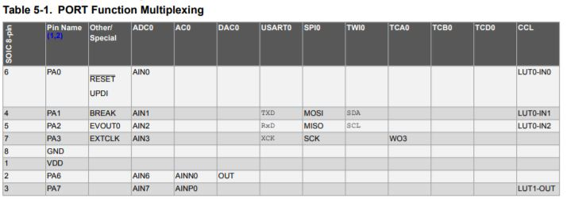
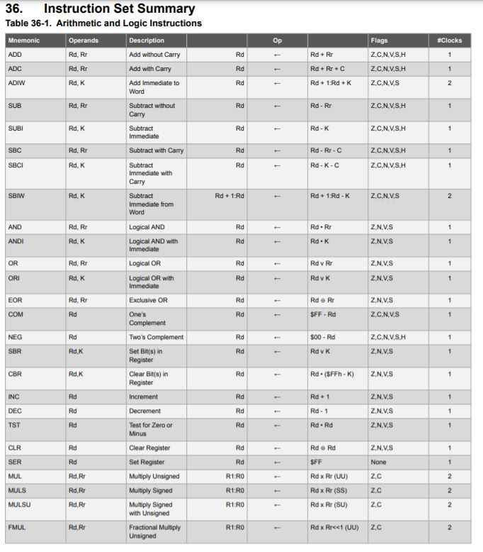
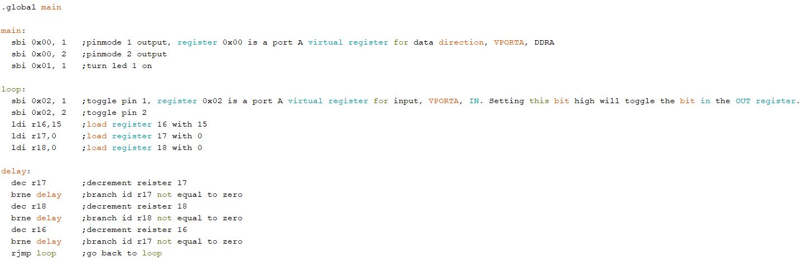

Embedded Programming
This page documents the programming of the attiny412 microcontroller.
- Button and LED not checked
- attiny412 datasheet not checked
- attiny412 registers not checked
- Register Manipulation not checked
- Inline assembly not done
- Just assembly not done
Button and LED
This is the main loop for processing the fading LED. fading the led is done with analohWrite.
This is the code that handles button press behaviors and debouncing.
This is the code running on the attiny412.
This is the code running on the attiny85.
Download source code attiny85 Download source code attiny412attiny412 datasheet
This is the datasheet for the attiny412 microcontroller.
These are the specifications.
This is the block diagram. It shows how peripherials are connected to each other through the bus.
This is the pinout.
Some pins can serve multiple functions.
This is the internal memory address mapping.
This page of the datasheet explains the I/O port.
This is the internal wiring of the I/O port. It shows how the port connects to the registers.
attiny412 registers
This is information on the I/O registers.
This is the address map for the different peripherials.
This is the instruction set.
The BRNE instruction will branch if the register is not equal to zero. and will take 2 cycles when branching and 1 cycle when not branching.
This is the DEC instruction. It will decrement the value in a register by 1.
The PORT register is mapped to the VPORT register.
This are the different PORT registers.
And this are the VPORT registers. Only some registers are mapped, the data diretion register (DIR), the output register, input register and interupt flags register.
This is the bitmapping for the DIR register of VPORT.
This is the bitmapping for the OUT register of VPORT.
This is the bitmapping for the IN register of VPORT.
By writing a bit high in the IN register, the bit in the OUT register will be toggled.
Register Manipulation
Port manipulation can write to pins in just a few instructions taking less than a microsecond while digitalWrite takes a few microseconds.

The code for digitalWrite is more complicated than code for direct port manipulation.
PORTA.DIR is used to change the DIR register. The bit is set high for output.
PORTA.OUT is used to change the OUT register.
This is the code to blink an LED.
This is the program running on the hello board.
Download source codeInline assembly
This is the code to blink an LED.
>>explain assemblyThis is the program running on the hello board.
Download source codeJust assembly
This is the code to blink an LED.
 >>explain assemblyThis is the program running on the hello board.
Download source code